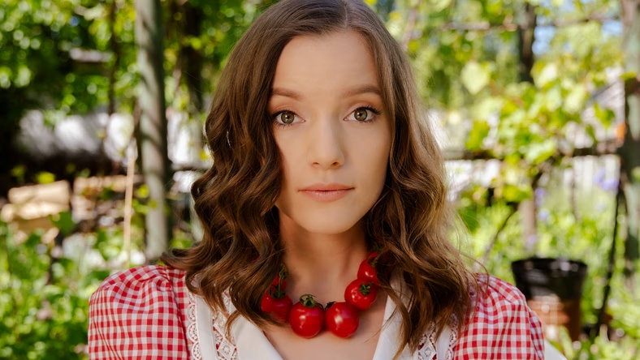

×
Sanah - Krótka Biografia

Sanah, czyli Zuzanna Jurczak, jest jedną z najpopularniejszych polskich piosenkarek młodego pokolenia. Jej charakterystyczny styl muzyczny łączy pop z elementami indie i alternative, a teksty piosenek poruszają emocjonalne tematy.
Sanah zdobyła popularność dzięki hitom takim jak "Szampan", "Melodia" i "Królowa dram". Wyróżnia się także swoją oryginalną osobowością i unikalnym stylem artystycznym.